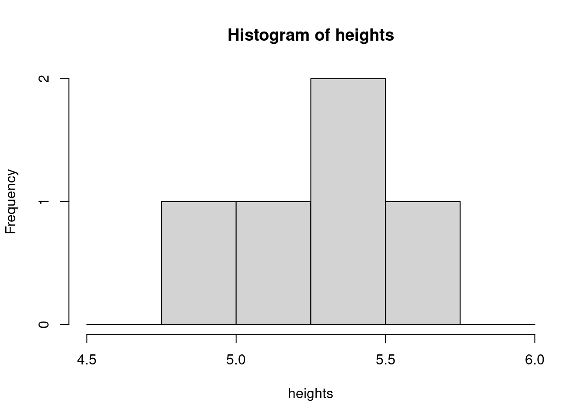
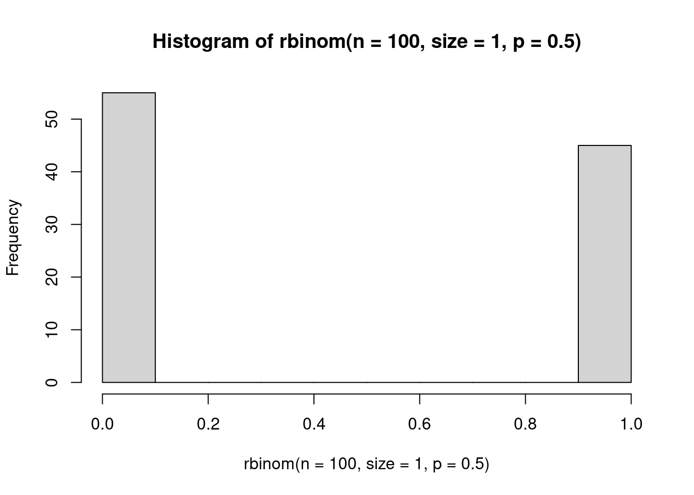
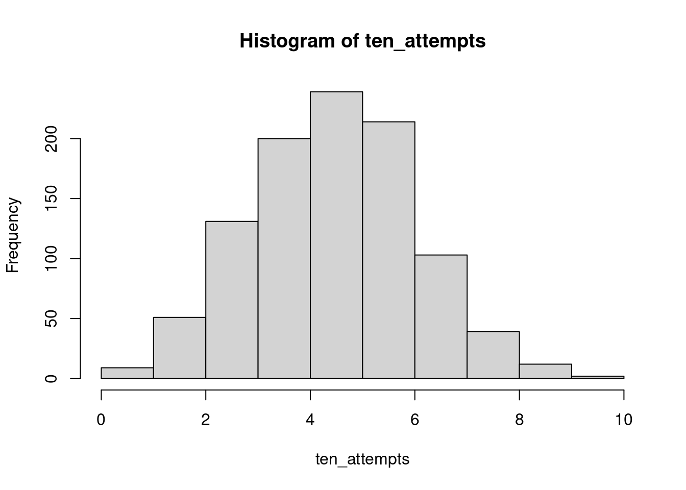
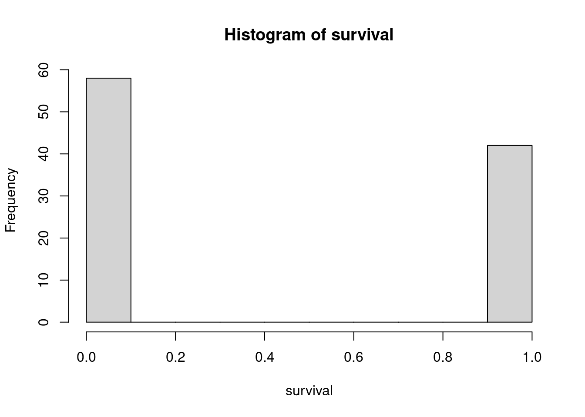
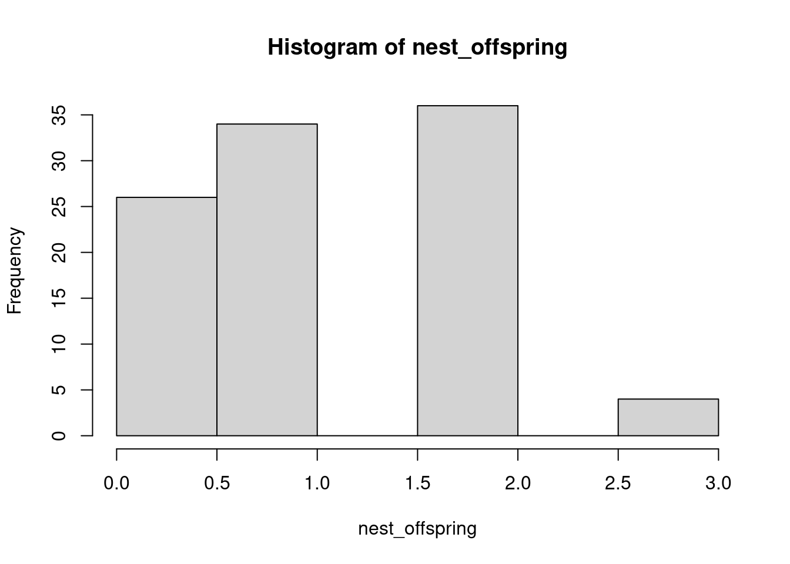
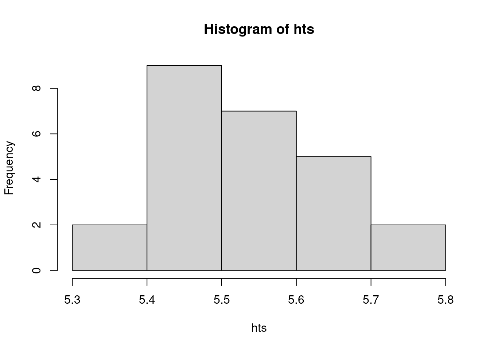

feets <- c(4, 5, 5, 5, 5)
inches <- c(11, 7, 2, 4, 6)
heights <- feets + inches/12
hist(heights, breaks=seq(4.5, 6, .25))
In this class, we are taking our hypotheses and converting them into models. In order to then model our data and get back to our big-picture hypotheses, we need something quantifiable, which means we will be dealing with numbers (like, a lot of numbers). As a refresher, there are different types of numbers. Real numbers are any number on the number line including both rational (can be expressed as a fraction of two integers) and irrational (infinite with non-repeating decimals, like \(\pi\)), but not imaginary numbers like \(\sqrt{-1}\). We won’t need to work with imaginary numbers at all this semester, and we probably don’t need to touch many irrational numbers (but maybe if you’re dealing with circles in your deterministic equations?). But, we will need to know the difference between lots of types of real numbers, and how to describe them.
Positive numbers are those greater than zero. Negative numbers are less than zero. Zero is neither positive nor negative.
Integers do not have decimal places. They can be positive or negative, or zero, but will only take values like 1, -12, 42, 0, etc. Natural numbers are positive integers and are how you would probably start counting (i.e., 1, 2, 3, 4, …) and do not include zero.
Rational numbers can be expressed as fractions. A lot of the numbers we will see this semester will have a lot of decimal places. That doesn’t mean we actually care about most of them. In general, round things to two or three decimal places (see ranty blog post for more). Anything more than that is just artificially inflated precision.

When we are measuring things, it is also really important to keep in mind the biological reality of the data - what values can our thing take, what values are impossible, what is ‘typical’ for the thing we are measuring. What values can human height take? What values can human height not take? What would be a value that would cause you to think you made an error? What would be typical values for human height? What type of number is height? What would be too precise of a value for height to take? i.e., what should you report it as? What are some units we could use for height?
Height can be described as a random variable, meaning it can be described by a probability distribution because we know something about the properties it can take.
feets <- c(4, 5, 5, 5, 5)
inches <- c(11, 7, 2, 4, 6)
heights <- feets + inches/12
hist(heights, breaks=seq(4.5, 6, .25))
There is a classic scene in the absurdist play Rosencrantz and Guildenstern are Dead by Tom Stoppard in which they improbably flip a coin and it turns up heads 92 times in a row. If you flip a coin, what is the probability that it lands up heads? There is a 0.50 probability, or 50% chance, of flipping heads. There is also a 0.5 probability that the outcome is tails. These two probabilities have to sum to 1 because there is no chance of any other outcome. Put another way, if \(p_h = 0.5\), then \(p_t = 1 - p_h = 0.5\), where \(p_h\) is probability of heads and \(p_t\) is probability of tails.
Now, instead of thinking about flipping a coin as a 50/50 shot at heads or tails, think about it only in terms of succeeding at flipping heads. Each successful attempt you get a ‘1’ for a success, and each time the coin is not heads, we call it a ‘0’ for failure. Put another way, we ask the question ‘Did we flip heads?’ and if the answer is TRUE, and we use a 1 to denote that. This is actually how R encodes TRUE (T = 1) and FALSE (F = 0).
# to leave notes to yourself in R scripts, start with a #
?rbinom # look up the Help file to find out about the arguments to the function
# rbinom wants:
# n, the number of observations / replicates
# size, the number of draws
# p the probability of success
# to simulate a single coin flip, we want to take one replicate (n=1) of
# one draw (size=1) from a binomial distribution with a probability of
# success (heads) of 0.5
rbinom(n=1, size=1, prob=0.5)[1] 0# we could keep running this line over and over
# or we could increase n, the number of replicates
# this gives us a vector of 100 observations of a coin flip
rbinom(n=100, size=1, p=c(0.5)) [1] 0 1 1 0 1 1 0 1 1 1 0 0 0 0 0 1 0 1 1 0 0 1 0 1 0 0 0 0 0 0 0 0 0 0 0 1 0
[38] 0 1 1 1 0 1 1 0 0 0 0 0 0 1 1 0 1 1 1 0 0 1 1 0 1 0 0 1 0 1 0 0 0 0 0 1 0
[75] 0 0 0 1 1 0 0 1 0 0 0 0 1 0 0 1 0 0 0 0 0 0 0 1 0 1# to visualize the outcome, we can create a histogram plotting the results
# using the function hist()
hist(rbinom(n=100, size=1, p=0.5))
# because the function is drawing from a probability distribution, outcomes will
# be a little different every single time. If you need them to be the same, you
# can set the seed with set.seed(42), or any other numberThe outcome we are observing, successfully flipping heads, is a random variable. A random variable is one that is drawn from a probability distribution (not in the colloquial sense of the word random). Our observed response (heads = TRUE) is drawn from a Bernoulli distribution with a probability of success of 0.5. We can write this mathematically as: \[heads \sim Bernoulli(p=0.5)\]
The Bernoulli distribution is a probability distribution that only yields success (1) or failure (0) based on the probability of success \(p\). The probability can vary depending on the process you are modeling, but the outcome will always be 0 or 1.
While we could be very high-brow in this course and simulate the probability of that series of events, instead we will consider the remarkable case of Jo Brand’s performance in a game of ‘Horse or Laminator’ on Taskmaster. In this task, five comedians have to guess correctly whether the taskmaster has selected a card with a horse on it, or a laminator on it. For the sake of this exercise, we will assume that the taskmaster is random in his selections, and that the only thing we need to be concerned with is the probability of a comedian correctly guessing if he has selected a horse or a laminator (i.e., he is not more or less likely to choose a horse or a laminator, and there is no higher chance of a comedian being correct in the case of him selecting one or the other).
There are only two options, so we assume that comedians have a 50/50 shot at being correct, meaning they have a 0.5 probability of successfully guessing if the taskmaster has chosen a horse or a laminator. We can represent ‘success’ with a 1 and ‘failure’ with a 0. If the taskmaster chooses a horse and they select horse, that’s a 1; if he selects a horse and they select a laminator, that’s a 0; if he selects a laminator and they select a laminator, that’s a 1; and if he selects a laminator and they select a horse, that’s a 0. It does not matter what is selected, so long as their answers match.
In R, we can represent this scenario as arising from a binomial distribution. We’ve encountered the function rbinom before when playing around with code, and that is the way to randomly draw from a binomial distribution in R. For a single guess, we will make one draw from a binomial distribution of size 1, and a probability of 0.5.
rbinom(n = 1, size = 1, 0.5)[1] 0Note that the value we get from this can only ever be 0 or 1, but, the value returned is random. We don’t always get a 1, and we don’t always get a 0, but every single time we have a 0.5 probability of getting a 1 (i.e., a ‘success’).
Now let’s assume that each comedian has 10 guesses. That’s not actually what happens on the show, but let’s run with it for a minute. We can adjust our code so that instead of drawing one number from the distribution once, we draw one number ten times.
# take ten draws of size 1 from the distribution
rbinom(n = 10, size=1, prob=0.5) [1] 0 0 0 0 0 1 0 1 1 0# take 1 draw (for one comedian) who gets 10 guesses, and report the number of successes in those 10 attempts
rbinom(n = 1, size=10, prob=0.5)[1] 5We could now tally up the number of times a comedian was successful based on this random draw. Over the long-run, this number should balance out to roughly 50/50, but on any given draw it is random. The reason it starts to balance out when we take enough draws is due to the law of large numbers. If we make enough draws from a probability distribution, eventually it will start to resemble the expected value. Let’s try still letting our comedian guess 10 times, but now we will iterate that for 1000 attempts. So in our simulated world, you could think of it like 1000 comedians all get a shot to guess horse or laminator 10 times each, and we want to know the average number of times they were correct. We would expect it to stabilize probably somewhere around five out of 10 times.
# this will give us 1000 simulations of 10 draws from binomial
rbinom(n = 1000, size=10, prob=0.5) [1] 4 3 5 6 6 6 6 3 2 6 3 2 4 8 5 3 8 1 4 3 5 7 5 6
[25] 5 8 3 3 6 2 7 8 5 8 6 6 7 2 8 4 4 5 4 5 5 8 5 3
[49] 5 7 7 4 5 6 4 6 6 5 6 7 4 8 6 2 5 6 3 4 4 3 3 6
[73] 4 4 4 4 3 4 6 5 3 4 5 4 5 6 4 6 4 1 4 4 6 7 5 4
[97] 5 6 6 4 6 6 5 3 4 5 5 8 5 7 6 5 6 4 9 5 2 4 5 4
[121] 6 7 6 4 6 4 7 4 8 3 7 2 6 3 4 5 8 4 7 3 8 4 6 3
[145] 3 4 7 4 2 4 5 5 8 5 6 6 6 3 2 5 4 4 7 4 5 3 7 5
[169] 4 5 4 4 4 4 4 5 6 6 6 4 7 6 7 3 7 8 4 8 5 4 5 4
[193] 5 6 6 6 5 5 7 6 7 4 5 5 7 4 6 5 3 7 7 5 5 3 5 4
[217] 4 4 4 4 2 6 6 2 3 4 4 8 4 3 5 5 5 2 8 4 3 7 3 8
[241] 5 4 6 6 6 5 7 5 7 5 3 3 3 5 5 7 6 8 4 5 3 5 4 5
[265] 4 7 4 4 6 6 5 7 8 4 2 4 6 8 4 4 6 6 8 6 5 4 4 4
[289] 6 6 3 4 3 2 5 2 5 4 5 6 4 6 3 2 7 6 3 5 8 7 6 6
[313] 6 5 6 3 4 2 5 4 4 7 6 5 7 4 5 5 4 6 5 5 3 5 7 8
[337] 4 6 4 8 6 7 2 6 4 7 4 5 6 5 6 3 7 4 8 5 3 3 5 5
[361] 4 1 4 5 5 5 4 2 6 6 9 4 6 7 4 6 6 6 7 7 5 6 8 7
[385] 3 5 7 8 6 6 5 4 3 4 6 9 5 5 7 4 5 5 6 3 6 6 6 4
[409] 5 8 3 5 5 3 4 3 6 5 3 2 4 4 6 1 7 8 7 6 5 4 8 4
[433] 5 7 2 5 5 8 4 5 5 2 5 5 4 5 3 9 4 3 5 4 7 6 3 5
[457] 2 6 7 5 3 2 6 4 4 5 6 8 5 2 7 6 5 4 3 4 6 8 2 6
[481] 7 4 5 4 4 7 6 5 8 3 6 4 5 4 4 6 5 5 8 7 3 6 7 6
[505] 5 3 6 7 4 6 6 4 6 3 6 7 4 6 3 4 3 4 5 3 5 6 5 5
[529] 4 4 5 8 7 6 4 7 6 3 7 3 4 4 5 6 5 6 5 5 6 4 4 3
[553] 7 5 5 2 5 5 4 6 7 6 6 6 5 3 5 7 4 4 5 4 2 4 5 8
[577] 7 6 7 5 5 2 5 4 4 4 3 3 6 4 3 4 7 4 3 4 4 5 5 2
[601] 6 5 5 5 4 6 6 6 6 6 5 5 6 4 2 4 5 5 3 6 3 5 4 5
[625] 6 4 7 5 7 5 7 5 6 6 4 4 7 4 5 5 4 2 5 7 8 4 5 2
[649] 6 3 6 3 6 2 4 7 4 5 6 5 7 5 1 7 5 6 6 5 5 7 7 6
[673] 9 6 7 4 5 7 5 5 3 4 6 4 8 6 4 3 7 4 4 7 2 5 7 5
[697] 9 5 7 6 6 4 6 6 8 5 4 5 4 7 5 7 7 9 5 5 4 0 5 8
[721] 9 5 2 4 5 6 5 5 2 5 4 5 7 1 5 6 2 4 3 3 6 7 4 6
[745] 8 6 6 2 7 6 4 4 6 3 4 5 4 3 6 4 7 4 3 4 5 2 5 6
[769] 5 7 7 4 6 5 4 5 4 6 5 5 5 3 7 3 3 3 5 4 5 6 5 5
[793] 6 3 3 6 4 4 3 6 6 4 7 7 5 7 5 4 1 3 4 6 3 7 3 8
[817] 4 3 2 7 4 6 1 3 5 6 4 6 5 3 5 5 4 3 5 4 4 3 5 4
[841] 6 5 7 2 5 7 4 6 6 7 3 6 6 4 5 5 9 2 7 5 2 8 5 2
[865] 7 4 5 5 4 1 6 4 6 6 6 7 7 5 4 1 4 5 3 6 3 4 7 6
[889] 5 7 3 4 4 5 5 6 7 6 5 6 4 10 2 5 5 6 5 8 6 4 6 6
[913] 5 7 5 2 8 3 5 6 8 7 7 7 4 5 3 3 6 5 1 6 10 6 2 4
[937] 7 7 6 5 5 3 5 3 4 3 5 7 6 7 4 6 4 4 5 5 6 4 1 8
[961] 3 7 6 8 8 5 3 7 4 5 7 6 5 5 5 3 4 8 6 6 5 5 2 5
[985] 4 6 5 5 5 0 4 3 4 7 6 2 4 8 5 4# we should save this to an object so it is easier to work with
ten_attempts <- rbinom(n = 1000, size = 10, prob=0.5)
table(ten_attempts)ten_attempts
0 1 2 3 4 5 6 7 8 9 10
3 6 51 131 200 239 214 103 39 12 2 hist(ten_attempts)
Now, what actually happens on Taskmaster is that the first comedian gets five correct in a row (horse, horse, horse, horse, laminator). The second gets one correct. The third gets zero correct, the fourth gets one, and the final comedian, Jo Brand, guesses horse or laminator correct 13 times in a row. Using the rbinom function, work out what the probability of each of these events is. Keep in mind that now instead of getting a certain number of guesses and tallying success across all those, as soon as a comedian guesses incorrectly, they are out. So we are looking only for that number of successful events in a row to calculate the probability.
# recode david's as 1, because otherwise length doesn't work correctly; you can't guess 0 times
# there are many other solutions possible
# you could subset stuff, for example
# or use logical vectors to find true and false, etc.
scores <- c(5, 1, 1, 1, 13)
for(i in scores){
print(prop.table(table(rbinom(n = 1000000, size = i, prob=0.5)==i)))
}
FALSE TRUE
0.968866 0.031134
FALSE TRUE
0.500147 0.499853
FALSE TRUE
0.500492 0.499508
FALSE TRUE
0.499423 0.500577
FALSE TRUE
0.999866 0.000134 # we could also do it mathematically, instead of with simulation
dbinom(scores, scores, 0.5)[1] 0.0312500000 0.5000000000 0.5000000000 0.5000000000 0.0001220703To move on to a slightly more ecological example than coin flips or horses and laminators, let’s think about guillemots. Guillemots are seabirds that nest on steep cliffsides to escape predators. They spend most of their life on the ocean, however, and as such are very awkward on land and also not great at flying. To get from the cliffside nest to the ocean for the first time, guillemot chicks have to jump and then glide/fly. If they do not make it all the way, they can attempt to run, but are vulnerable to predation. The only option for chicks is to survive or fail - making it 70% of the way to the ocean will result in failure (and, in this case, death). Thus the probability of success does not equate to the actual rate of success - it is the probability per trial (i.e., each attempt).
# let's assume chicks have a 40% chance of making it to the ocean, and there are
# 100 chicks jumping from the cliff hoping to make it to the ocean so we have
# 100 observations, each with one draw from the Bernoulli distribution
rbinom(n = 100, size=1, p=0.4) [1] 1 0 1 1 0 0 1 1 1 0 0 0 1 1 1 1 0 0 0 1 1 0 0 1 1 1 1 0 0 0 0 1 1 1 0 0 1
[38] 0 1 1 0 1 0 0 1 0 0 1 0 0 0 0 1 0 0 0 1 1 1 1 0 0 0 0 0 0 1 0 0 0 0 1 0 0
[75] 0 0 0 1 1 0 1 0 1 0 0 0 0 0 1 0 0 0 0 1 0 1 0 1 0 0# so far, we have just been running functions and the output is shown in the console
# but we don't have anything in our environment
# can save to an object with the <- assignment operator
survival <- rbinom(n=100, size=1, p=0.4)
# we can then do things with that saved object, like plot it
hist(survival)
Guillemots typically only lay 1-2 eggs, but for the sake of our example code, let’s pretend that each pair has 3 chicks that are attempting to make it to the ocean. Each individual chick’s attempt could be modeled with a Bernoulli distribution, but if we consider it from the perspective of the breeding pair, the total number of surviving offspring is what matters. We can think of the number of chicks from each nest that make it to the ocean as the sum of their individual attempts for a single nest. This is the Binomial distribution, which is a more generalized version of the Bernoulli distribution (more accurately, the Bernoulli distribution is a special case of the Binomial distribution with one draw) in which each observation has multiple draws.
# for one nest with 3 chicks and a probability of success of 0.4
rbinom(n=1, size=3, p=0.4)[1] 0# we could also think about a colony with let's say 100 nests
# how many chicks from each nest will make it?
nest_offspring <- rbinom(n=100, size=3, p=0.4)
hist(nest_offspring)
nest_offspring [1] 2 1 1 1 2 1 2 1 2 2 1 1 2 1 0 0 1 2 2 1 0 2 1 2 0 1 0 1 2 1 2 3 1 0 1 2 1
[38] 2 0 2 1 1 0 3 2 2 1 1 0 0 2 1 1 1 0 0 2 2 0 0 2 0 2 0 0 2 0 3 0 3 0 2 1 0
[75] 2 0 2 1 2 0 1 1 2 1 2 2 2 0 1 2 1 2 1 0 1 2 2 2 1 0# what is the probability that all three chicks from a nest make it?
# because we know what we fixed p to, we could multiply the probabilities
0.4^3[1] 0.064# what is the probability that none make it?
(1 - 0.4)^3[1] 0.216We are able to calculate what the probability of these outcomes are because we fixed the probability of success at 0.4 and then simulated outcomes. In the real world, we rarely know what the probability of success truly is, and instead we are working backwards from our observed outcomes (i.e. our data) to estimate the probability of survival. One of the beautiful things about working with simulated data is that we know the input value, so we can test assumptions, see if we recapture our input, and play around with different model structures and know that anything that is unexpected is most likely a problem with our code or model, not the data.
With discrete distributions like the Binomial, we can convert the frequency of outcomes to a proportion of the total as an estimate of probability. Dividing the frequencies by the total sample size makes it so that the total probability sums to 1.
# table is a function that tallies up all the items in a vector
# a vector is a type of object that is one dimension, i.e. nest_offspring is a
# vector with length = 100
table(nest_offspring)nest_offspring
0 1 2 3
26 34 36 4 # proportions will convert the table into proportions instead of counts
# so will prop.table and I often use that function because I learned it first
# there are many different ways to accomplish the same goal in R
survival_prob <- proportions(table(nest_offspring))
# How do these values compare to the calculated probability of all three chicks
# surviving? What about of none surviving?
# With the values calculated from the simulated data (i.e. not the parameter
# value that we fixed), what is the probability that *at least* one chick
# from a nest survives?
0.47 + 0.27 + 0.06 # note: numbers might be different because we didn't set.seed()[1] 0.8In general with coding, you want to avoid hard coding like this where you put in fixed values. It is much better to use code that is flexible if the input data changes (e.g. we are using a randomly generated dataset, so it will change every time), or if you want to change some parameter across a lot of different parts of the code. For example, instead of repeatedly typing p=0.4, we could have created an object in our environment with the probability of success such as p.surv <- 0.4 and then specifying p=p.surv throughout the script, which would make it really easy to change the simulations for a new scenario (e.g. if the guillemot chicks were given little hang-gliders, we might increase p.surv and would only have to type it out once as p.surv <- 0.8.
Subsetting vectors in R is a really useful tool when you want to apply a function to only part of a vector, inspect part of an object, etc. We use the square brackets [] for subsetting, and within them specify which elements to return. The elements to return can be a numeric vector (e.g. c(1,2,4)) to return the first, second, and fourth elements, or a logical vector indicating if an element should or should not be returned (e.g. c(TRUE TRUE FALSE TRUE)). If subsetting a range of consecutive elements, the : operator can also be used (e.g. 1:4 is the same as c(1,2,3,4)).
# To avoid hard coding our estimated percent, we can use sum() on a subset of
# the table of proportions to estimate the probability at least one survives?
sum(survival_prob[2:4])[1] 0.74# what is the probability at least two survive?
sum(survival_prob[3:4])[1] 0.4# side note: if you're not sure which indices to subset, it can help to look at
# your object; you can easily do this in RStudio by highlighting just the bit of
# code with your object name and using Ctrl + Enter (or Cmd + Enter) to print
# just that object to the console, i.e. if you highlight part of a line, you will
# only run the highlighted bit, not the entire lineComing back to our human height example, remember that anything we can describe with a probability distribution can be a random variable. In the case of human height, it is probably normally distributed. The normal, or Gaussian, distribution is for data that are approximately bell shaped, continuous, can take values between negative and positive infinity, and have some spread around a measure of central tendency. We will talk more about probability distributions on Thursday.
hts <- rnorm(25, 5.5, .1)
hist(hts)